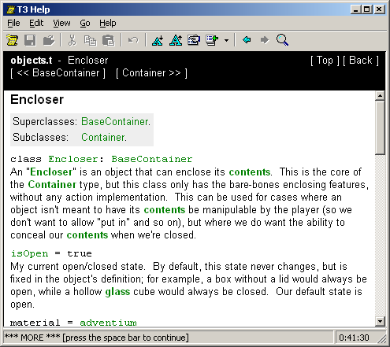

T3 Help is a TADS 3 program that provides a quick reference to most classes in the TADS 3 libraries.
It does that by reading the actual source files and extract comments. The good thing is that it's never out of date. When you download an updated library, you just run T3 Help Generator and after 5 to 15 minutes, you have a fresh help file.
The bad thing is, of course, that the program isn't that clever.
For instance, it chokes on macros, causing it to think that
actions.t is practically empty. So, you can't use it to look up
actions.
However, it's usefull when you, say, can't remember how to link two
Door objects together, and similar situations.

You can't download the compiled help file here - it's roughly 1.6 MB big.
Instead, download this ZIP-file, which contains both the help-generator and the help-viewer.
In t3helpgen.t, modify the following macros as appropriate
for your system:
#define BASE_PATH '/Program/TADS3/'
#define MAIN_INC_PATH 'include/'
#define MAIN_LIB_PATH 'lib/'
#define ADV3_LIB_PATH 'lib/adv3/'
#define LANG_LIB_PATH 'lib/adv3/en_us/'
Then compile and run t3helpgen.t.
When t3helpgen.t has finished, you can compile and run t3help.t to browse the help file. Notice that compiling may also take some time, as it needs to compile the 1.6 MB big t3help_hlp.h file that t3helpgen.t generated.
I admit it: T3 Help works best in HTML TADS. It does also run in
the 32-bit text-interpreter, but the lack of scollbars makes it a
lot less usefull.
I'm pretty sure it won't run on 16-bit interpreters at all, as some
of the data structures it uses exceeds 64 KB.
Of course, you have the source now, you can try to fix it if you want to.
Yeah, it's still buggy.
T3 Help tries to handle large pages (like the page for Thing)
gracefully, by only showing the relevant part of the page, when you
follow a link to, say, moveInto().
However, this doesn't always work, and you end up with an empty
page.
In that case, click on [ Full page ] or type .full.
As mentioned, it doesn't understand macros, and often tries to
interpret them as functions.
And finally, it doesn't remove explicit linebreaks from
comments.
/* Explicit line break: *. <-- Like this. */
And there's a few cases where it fails to interpret the syntax
correctly.
But despite all this, it's still rather useful.
In my opinion, anyway.
Copyright 2002-13 Søren Løvborg. The text of this page is licensed under a Creative Commons Attribution-Share Alike 3.0 License.